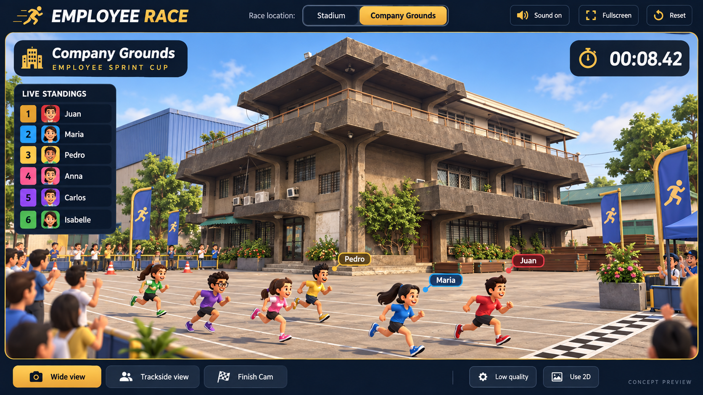

The generated concept guides the concrete balconies, projecting canopy, terrace railings, courtyard and navy/gold interface. The implementation uses stylized, instanced geometry and fits the entire visible lane group. Materials, foliage, shadows and camera distance are simplified. The original exterior photograph was not available in this workspace.
